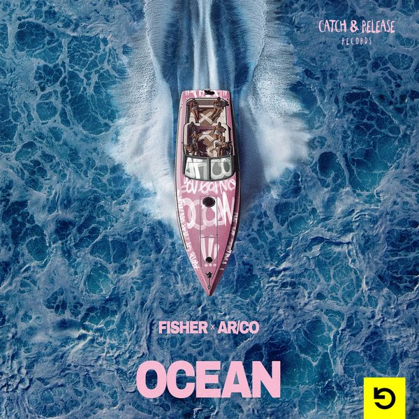

I 18 dischi e le top 6
 1
Get HypedMalaa
1
Get HypedMalaa
 2
SangbaCosta UK
2
SangbaCosta UK
 3
El TumbaoDual Beat x Jeremy Bass, All Fred
3
El TumbaoDual Beat x Jeremy Bass, All Fred

4 OceanFISHER (OZ), AR/CO 5
The Groove ManPiero Pirupa, LIONEEL
5
The Groove ManPiero Pirupa, LIONEEL
 6
Catch ThemKodat
6
Catch ThemKodat
 7
I Can't Go For ThatTOMMY VEE, DANNY LOSITO & KELLER
7
I Can't Go For ThatTOMMY VEE, DANNY LOSITO & KELLER
 8
MessGary Caos
8
MessGary Caos
 9
Body TalkAlok & Clementine Douglas
9
Body TalkAlok & Clementine Douglas
 10
Head Held HighScott Garcia, Cash Only + REIGNS
10
Head Held HighScott Garcia, Cash Only + REIGNS
 11
Out Of TimeMarc Benjamin, Ansun, WolfCaveland
11
Out Of TimeMarc Benjamin, Ansun, WolfCaveland
 12
FreakBiscits
12
FreakBiscits
 13
Calentura96 Vibe, Nautik (US), Elilluminari
13
Calentura96 Vibe, Nautik (US), Elilluminari
 14
PressureLaherte, GENESI (ITA)
14
PressureLaherte, GENESI (ITA)
 15
Every Body JumpMaxx Play
15
Every Body JumpMaxx Play
 16
Alibi (Tiësto Remix)Sevdaliza ft. Yseult & Pabllo Vittar
16
Alibi (Tiësto Remix)Sevdaliza ft. Yseult & Pabllo Vittar
 17
What I PleaseDaniele Ceccarini & Luke DB
17
What I PleaseDaniele Ceccarini & Luke DB
 18
Push The Feeling (feat. Salento Guys, RKN)Alex Guesta, Nicola Fasano, Fatman Scoop
18
Push The Feeling (feat. Salento Guys, RKN)Alex Guesta, Nicola Fasano, Fatman Scoop
La tracklist
- 1 Get Hyped Malaa Malaa Music
- 2 Sangba Costa UK Wh0 Worx
- 3 El Tumbao Dual Beat x Jeremy Bass, All Fred Armada Music
- 4 Ocean FISHER (OZ), AR/CO Catch & Release
- 5 The Groove Man Piero Pirupa, LIONEEL NONSTOP
- 6 Catch Them Kodat Hexagon
- 7 I Can't Go For That TOMMY VEE, DANNY LOSITO & KELLER Ego
- 8 Mess Gary Caos Casa Rossa
- 9 Body Talk Alok & Clementine Douglas Columbia/B1 Recordings
- 10 Head Held High Scott Garcia, Cash Only+REIGNS New State Entertainment
- 11 Out Of Time Marc Benjamin, Ansun, WolfCaveland Platonik Recordings
- 12 Freak Biscits WRONG
- 13 Calentura 96 Vibe, Nautik(US), Elilluminari Desolat
- 14 Pressure Laherte, GENESI (ITA) Catch & Release
- 15 Every Body Jump Maxx Play Hexagon
- 16 Alibi (Tiësto Remix) Sevdaliza ft. Yseult & Pabllo Vittar Twisted Elegance
- 17 What I Please Daniele Ceccarini & Luke DB DBMAFIA Music Label
- 18 Push The Feeling (feat. Salento Guys, RKN) Alex Guesta, Nicola Fasano, Fatman Scoop Route75 Records